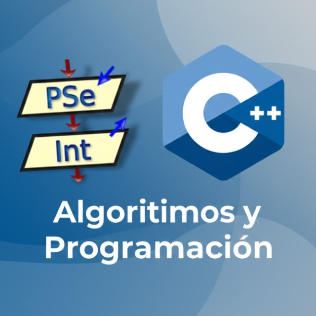
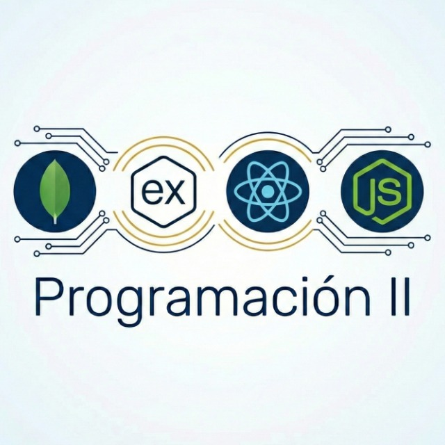
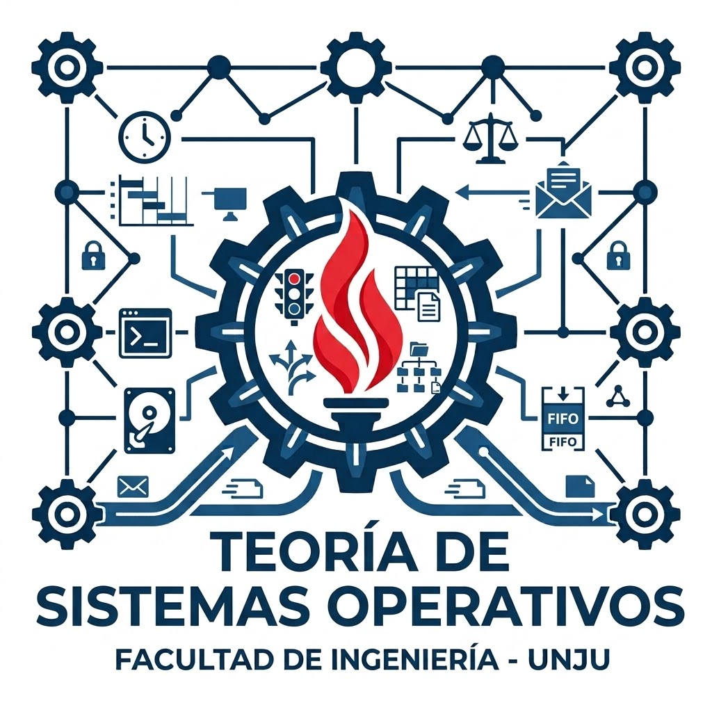

Gobernanza contextual
Reglas en texto plano y versionadas
AGENTS.md· rol y prohibicionesMEMORY.md· acuerdos de cátedra- Rúbricas analíticas
- Skills docentes (YAML)
 Mesa · Jóvenes Investigadores en Acción
Mesa · Jóvenes Investigadores en Acción
Ing. Fabio Argañaraz · Director del proyecto
Samara Zamar · Mariano Sumbaino · Gino Grosso · Asesora metodológica: Ing. Gabriela Bejarano


Iniciación a la Investigación 2025-2026 · GIyT – UCSE-DASS



push
La IA propone. El docente decide. El estudiante aprende a autoevaluarse.
Ing. Fabio Argañaraz
fabiodamian.arganarazazua@ucse.edu.ar
Samara Zamar · Mariano Sumbaino · Gino Grosso · Ing. Gabriela Bejarano